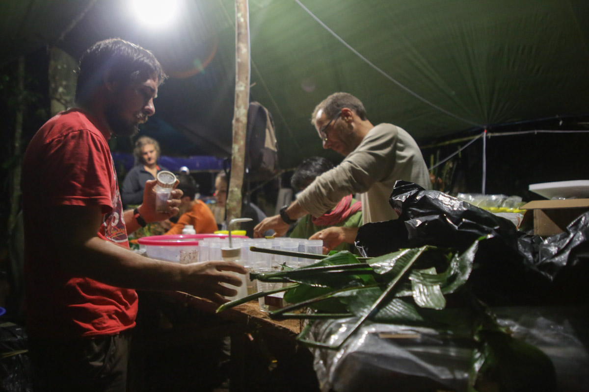
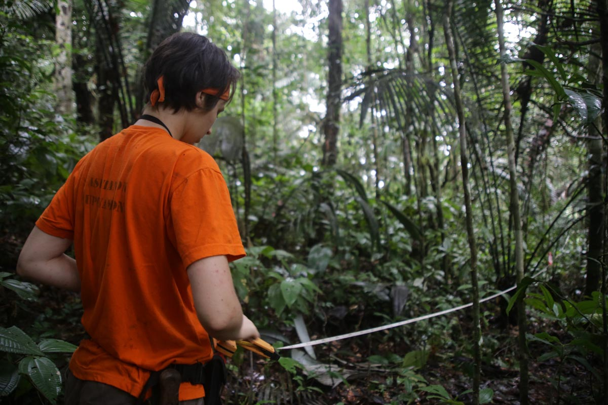
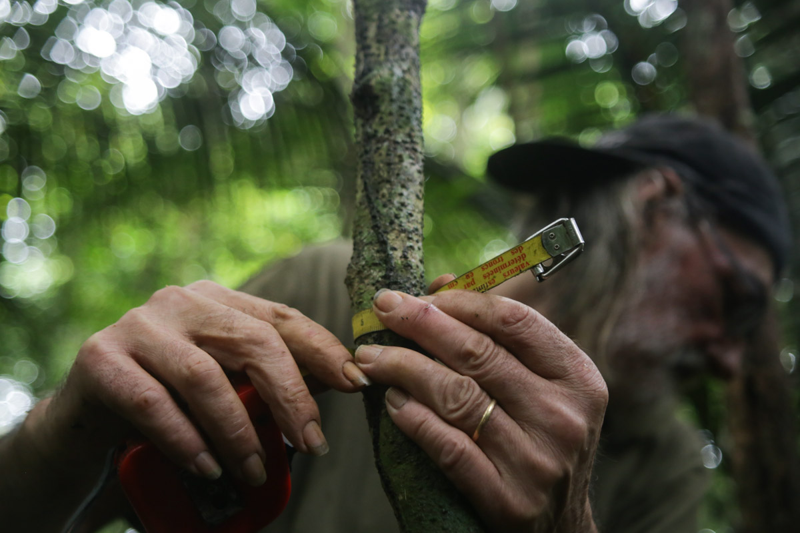
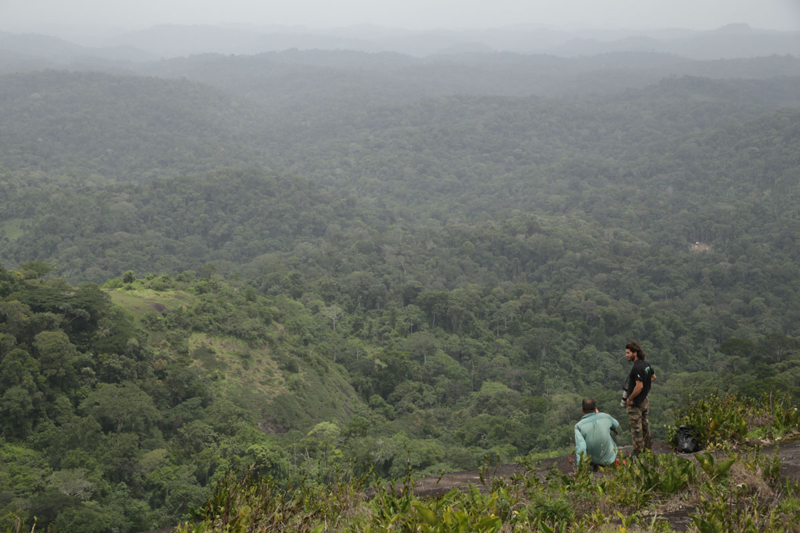
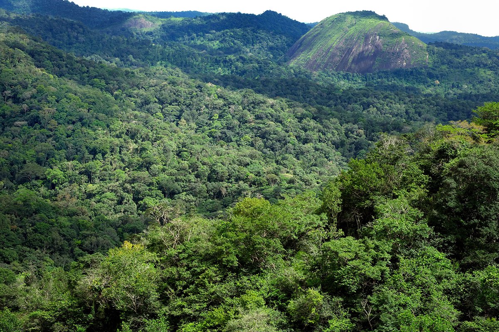

Ils sillonnent la forêt, armés de mètres rubans, de calepins, d’une connaissance encyclopédique de la flore, et ponctuent leur avancée de coups de fusils. Bienvenue chez les botanistes chasseurs d'arbres rares.
Il est 8 heures du matin, l’équipe de l’Institut de recherche pour le développement (IRD) se met en route. A sa tête, un grand nom de la botanique en Guyane : Daniel Sabatier, trente-cinq ans à arpenter la région les yeux tournés vers la canopée. L’entrechoquement du GPS et de la machette accrochés à sa ceinture rythme la marche. Dans ses pas, le botaniste Jean-François Molino et leur technicien Jean-Louis Smock. Les trois se connaissent suffisamment bien – une décennie à travailler ensemble – pour s’épargner des consignes inutiles. Le groupe avance vite et passe rapidement le petit pont de corde enjambant la rivière qui marque l’entrée du layon. Après une heure de marche, Daniel s’arrête pour consulter le GPS avant d’indiquer une direction vers la forêt dense qui borde le sentier. Trois machettes quittent de concert leurs fourreaux pour ouvrir un layon sommaire dans la végétation.
Après quelques dizaines de minutes passées à fendre le mur végétal, Daniel Sabatier annonce : « On fait ça ici ! » Pourquoi là, où la forêt semble pourtant identique aux zones traversées jusqu’ici ? « Nous travaillons sur six parcelles, réparties sur les quatre layons de manière à maximiser la biodiversité, dans des emplacements topographiques différents », explique-t-il. Aujourd’hui était donc visé un milieu de début de pente. Les sacs à peine posés, le botaniste vérifie le cap avec sa boussole et disparaît dans la végétation, déroulant derrière lui un long filin. Quelques kilomètres plus loin, un autre groupe de botanistes prend ses marques au beau milieu du layon. Les deux équipes ont choisi de travailler sur des parcelles différentes pour maximiser la surface étudiée. Plus bruyante mais tout aussi studieuse, la jeune équipe de cinq personnes déploie son matériel entre deux plaisanteries qui fusent. On sent tout le monde heureux d’avoir quitté la précédente parcelle positionnée dans un bas-fond – en d’autres termes, un marécage où la boue passe allégrement au-dessus des bottes. Le filin est ici remplacé par un mètre ruban de 200 mètres parcourant en ligne droite le plateau.
-

Le soir venu, l’équipe Diadema trie les échantillons récoltés dans la journée.
-

Les botanistes du projet Diadema travaillent sur une parcelle de 200 par 100 mètres.
Régulièrement, un filin secondaire de 50 mètres s’éloigne perpendiculairement, une fois à gauche, une fois à droite, de la ligne principale. « Cela fait une zone de 200 par 100 mètres, soit deux hectares », souligne Christopher Baraloto, le meneur de cette petite troupe. « Nous essayons d’avoir un échantillon représentatif en termes de composition floristique et de biodiversité : si la parcelle est trop grande, le milieu n’est plus homogène et si elle est trop petite, on risque de surreprésenter certaines espèces. » C’est ce botaniste américain, bandana vissé sur la tête, qui a imaginé ce protocole, pièce centrale du projet Diadema lancé en 2013 pour réunir botanistes, herpétologues ou encore entomologistes sur les mêmes parcelles d’études. « Nous essayons de coordonner des protocoles standardisés pour chaque discipline, afin que l’on puisse tous travailler ensemble. » L’idée derrière le projet est donc non plus de collecter des espèces, animales ou végétales, de façon isolée mais de comprendre comment celles-ci s’organisent entre elles.
Un coup de feu ébranle la forêt. Daniel Sabatier abaisse son fusil sous une pluie de feuilles chutant de la canopée. La branche qu’il visait est atteinte et termine sa course directement dans les mains de Jean-François Molino, qui s’empresse d’observer la forme des feuilles et des nervures avant de lancer son verdict. Ses trente ans d’expertise ne sont pas de trop avec 1 600 espèces d’arbres déjà décrites en Guyane. « Avec l’observation du tronc et des feuilles aux jumelles, nous arrivons à identifier un grand nombre d’espèces, mais quand nous avons un doute, nous prélevons un échantillon, développe Daniel Sabatier. Cela permet de faciliter l’identification, puis nous le gardons pour en faire une collection de travail pour le laboratoire, pour revenir dessus si besoin. » Si l’espèce est rare et peu documentée, ou s’il s’agit d’une espèce nouvelle, l’échantillon terminera dans l’herbier de Cayenne, dans celui du muséum à Paris ou dans d’autres herbiers internationaux. A raison d’une centaine d’arbres identifiés par parcelles, la récolte est donc fructueuse et les coups de feux fréquents. Un protocole bien rodé mis en difficulté ce jour-là par les atèles, ces singes aux membres démesurés bien décidés à défendre leur territoire en lançant d’énormes branches mortes en contrebas.
Les détonations se font entendre jusqu’à la parcelle de l’équipe Diadema. Eux aussi sont armés, chassant les branches résistantes à la détermination à vue, mais se penchent en plus sur la végétation basse. « La plupart des botanistes travaillent sur les troncs à partir de dix centimètres de diamètre, nous avons décidé d’étudier les tiges dès deux centimètres et demi », expose Christopher Baraloto. Sur chaque ligne secondaire, ils remontent les cinquante mètres de la parcelle, l’un mesurant la position de l’arbre par rapport à cette ligne, le diamètre du tronc et sa hauteur, un autre note toutes ces précieuses informations sur un carnet, tandis qu’un dernier s’occupe de la détermination des espèces et de la récolte, qu’elle se fasse au sécateur ou au fusil.
-

La hauteur et le diamètre de chaque arbre est mesurée et consigné dans un carnet.
-

Du haut d’un inselberg voisin, l’immensité de la forêt alentours saute aux yeux.
Arrivés au bout, le groupe élargit la chasse aux gros troncs dans les dix mètres à la ronde. « Nous avons cherché un moyen d’avoir plus de précisions sur la biomasse de la parcelle », explique le botaniste américain. « Pour la calculer, il faut juste la grosseur du tronc, sa hauteur et la densité de son bois. » Cette biomasse, étymologiquement la masse du vivant, offre notamment des informations sur la quantité de carbone stockée par la forêt. Car si la forêt amazonienne produit de l’oxygène via la photosynthèse, elle est aussi un puits à carbone, enfoui dans ses troncs.
En fin d’après-midi, les deux groupes endossent à nouveau les sacs à dos, direction le camp de base. La parcelle de Diadema sera demain mise à disposition des entomologistes et herpétologues. Du côté des botanistes, la soirée sera dédiée au tri et à la mise en presse des échantillons du jour. A la lumière des lampes, dans un amoncellement de sacs et de feuilles, Daniel Sabatier savoure sa chance de travailler dans ce lieu mythique de Guyane, dont le massif forestier est loin d’être homogène. « Dans les Tumuc-Humac, nous avons une végétation qui ressemble aux forêts du nord. Il y a beaucoup d’espèces présentes le long de la côte qui disparaissent en allant vers le sud, plus pauvre en termes de biodiversité, puis réapparaissent ici. » Pour le botaniste, la position géographique et le relief particulier de la région a permis aux Tumuc-Humac de résister aux changements climatiques de ces derniers millénaires. Un sujet d’étude en or.
Yann Chavance
-
